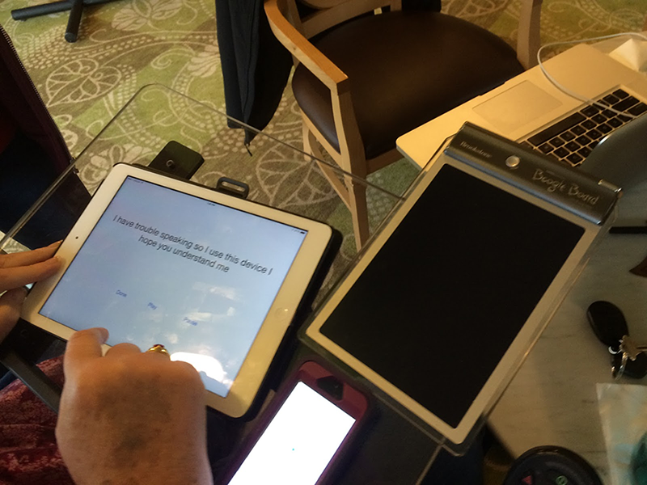

ScriptSpeak
Making communication accessible
Background
Meet Barbara. Barbara is a former teacher at blah and she like to _____. She also happens to have PLS, which is _____, ans is slowly paralyzing her vocal cords and hand movement. As a result, she is unable to speak very easily or clearly.She particularly strugles with ______, ____, ____, enviornment. She has been trying some handwritten and electronic solutions, but writing was getting more difficult and the electronic apps out there were both expensive and hard to understand for someone with limited technological knowledge.
The Problem
How can we create a new form of communication that is simple to learn, easily accessible, and quick to use in all environments?
The Solution
ScriptSpeak is an iOS app that makes communciation easy in all enviornments. Users just type in a phrase, press play, and can begin communicating! The app is user custaomisable, and all user phrases are saved for fture useand straightforward sot hat users will always know where to find exaactly that they want to say and can communicate painlessly.
Scriptspeak is easy to understand
Scripspeak is accessible
Scriptspeak is usable in all environment

The Process
Things I've Learned